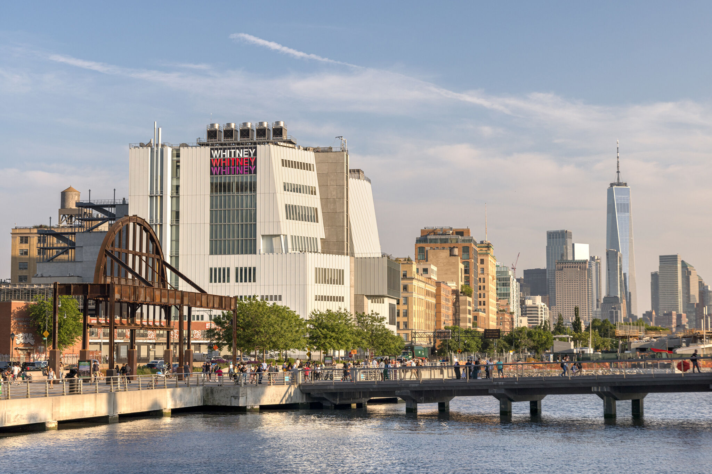

THE WHITNEY BIENNIAL

The Whitney Biennial is the longest-running survey of American art, and has been a hallmark of the Museum since 1932. Initiated by the Museum's founder Gertrude Vanderbilt Whitney as an invitational exhibition featuring artwork created in the preceding two years, the biennials were originally organized by medium, with painting alternating with sculpture and works on paper. Starting in 1937, the Museum shifted to yearly exhibitions called Annuals. The current format—a survey show of work in all media occurring every two years—has been in place since 1973. More than 3,600 artists have participated in a biennial or annual.
VIEW ALL ARTISTS